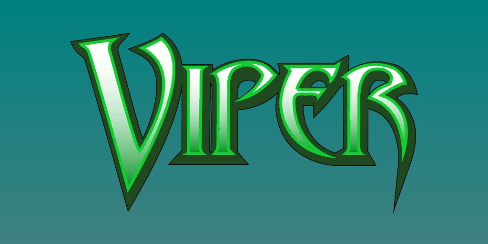
Vipère (Ophelia Sarkissian) (Terre-616)
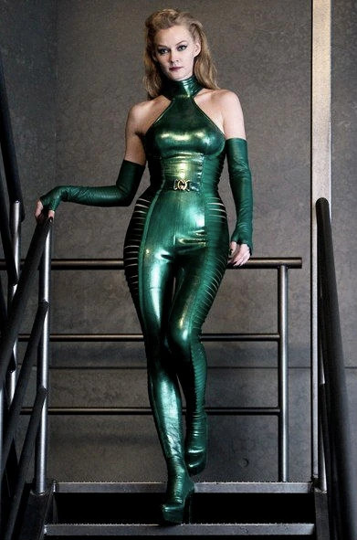
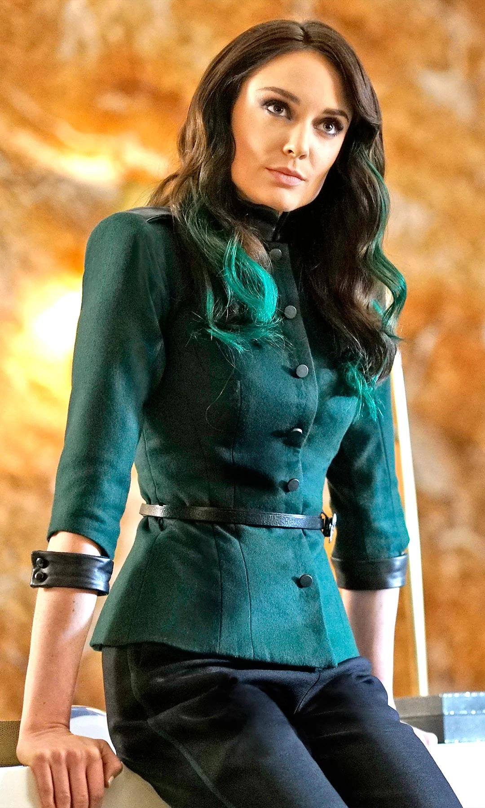
Origines :
Les parents d'Ophelia sont décédés alors qu'elle était encore enfant, victimes des guerres qui ravageaient l'Europe.
Cette dernière survécut mais subit de terribles séquelles : le côté droit de son visage resta défiguré et marqué à jamais, mais le traumatisme psychologique qu'elle subit fut bien pire encore.
Luttant pour sa survie, son destin bascula lorsqu'elle trouva un nouveau sens à sa vie en étant recrutée par l'organisation terroriste Hydra.
Elle fut l'une des nombreuses élèves du tristement célèbre recruteur d'Hydra, Kraken.
Surpassant tous les autres candidats potentiels grâce à sa cruauté, elle gagna le surnom de « Vipère » et un poste haut placé au sein du cercle restreint de l'organisation.
Vipère exerça un temps comme mercenaire indépendante, élève de l'aventurière Seraph sur l'île de Madripoor.
Plus tard, Seraph prit sous son aile un autre élève, le mutant Wolverine, qu'elle sauva de son ennemi juré, le mutant Dents-de-Sabre.
Seraph fut finalement assassinée par Dents-de-Sabre, non sans avoir fait prêter serment à Wolverine un serment de loyauté envers Vipère, par lequel il s'engagerait à obéir à toutes ses demandes.
Vipère prit ensuite la tête d'Hydra en remplacement du Baron Strucker sous le nom de Madame Hydra, elle dirigea un groupe d'agents chargés de contaminer l'approvisionnement en eau de New-York.
Confrontée à Captain America et Rick Jones, elle fut contrainte d'abandonner momentanément sa mission.
Elle chercha ensuite à se venger des héros, entraînant la mort apparente de Steve Rogers.
Après avoir célébré sa victoire, elle vainquit les Avengers ainsi que le directeur du SHIELD, Nick Fury, lors des funérailles.
Ce dernier, ayant découvert que le Captain était toujours vivant, déjoua ses plans.
Désespérée, elle lança une attaque suicide pour l'achever, mais en vain.
C'est ainsi que Madame Hydra fut apparemment tuée au combat.

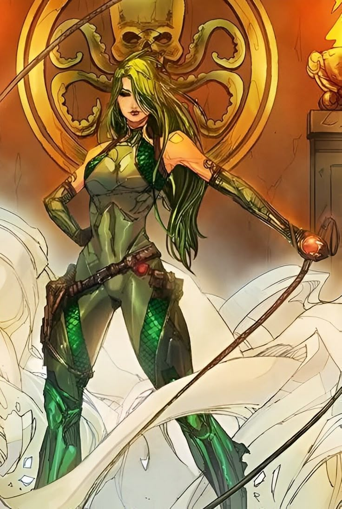
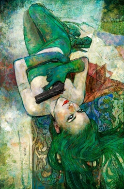
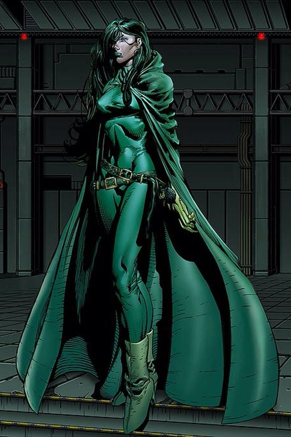
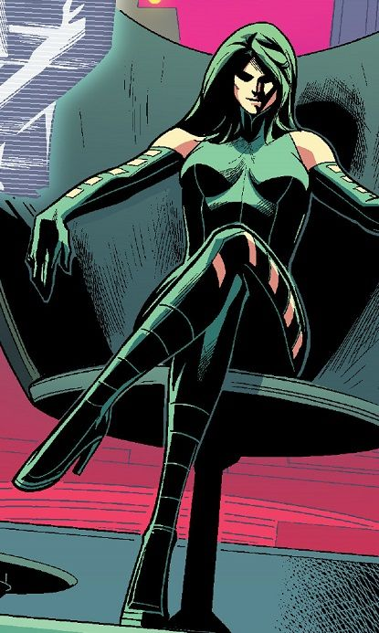
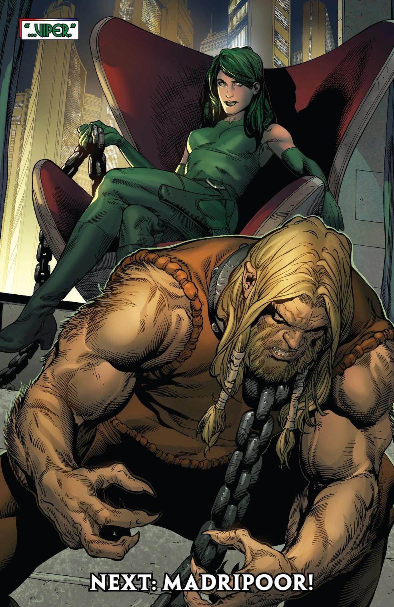
Capacités :
Vipère ne possède aucun super-pouvoir, mais elle possède une force, une vitesse, une agilité, une endurance et des réflexes dignes d'un athlète de niveau olympique.
Elle possède également un haut degrés de résistance à la souffrance physique et n'a aucune peur de la mort.
Après avoir subi un entraînement brutal dans divers arts martiaux, elle est aussi devenue une excellente tireuse d'élite ainsi qu'une pratiquante expérimentée des armes blanches.
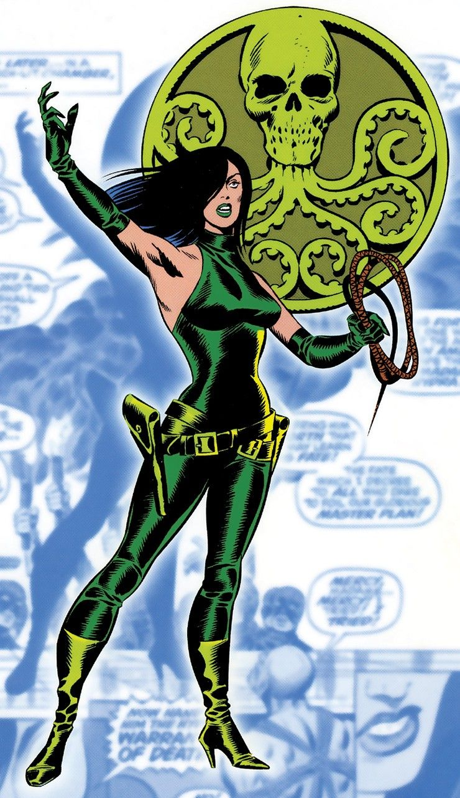
Apparence :
Vipère est une femme assez grande et élancée, à la silhouette athlétique.
Elle est généralement représentée avec une longue chevelure verte, souvent coiffés de manière volumineuse, ainsi que des yeux verts, avec une apparence volontairement séduisante et intimidante.
Son costume traditionnel est principalement composé d'une combinaison moulante verte, avec de longs gants et des bottes hautes, ainsi que des éléments jaunes ou dorés contrastant avec le vert.
Elle porte aussi une ceinture à motifs serpentins, et parfois une capuche verte ou une coiffe sur la tête.
Équipes affiliées


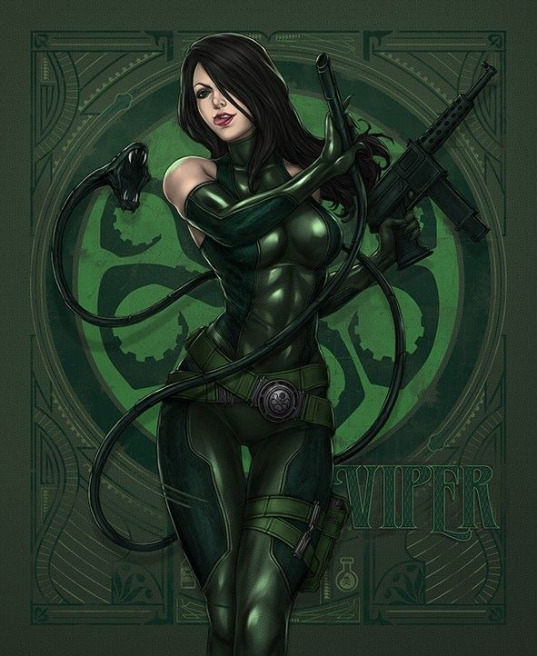
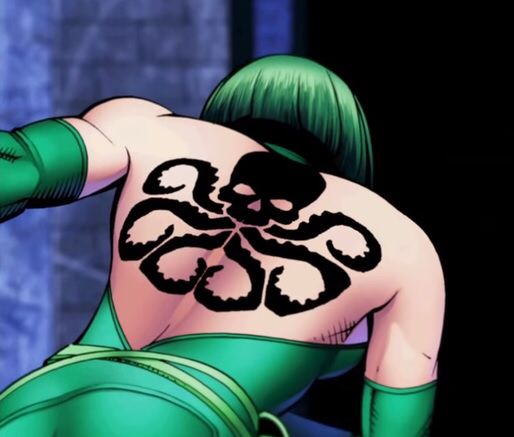
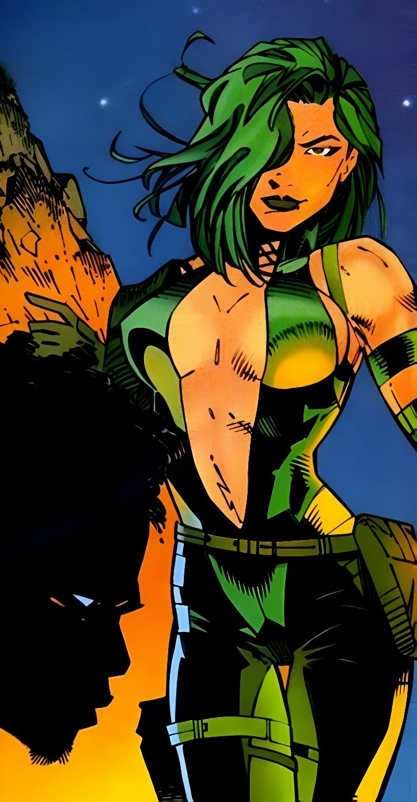
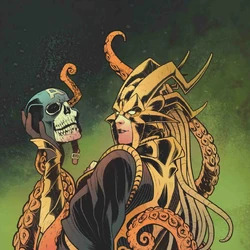
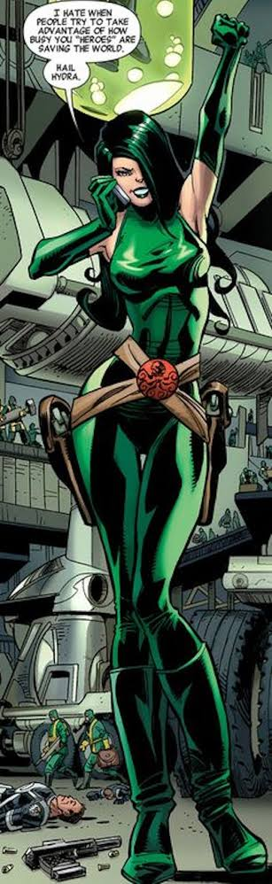
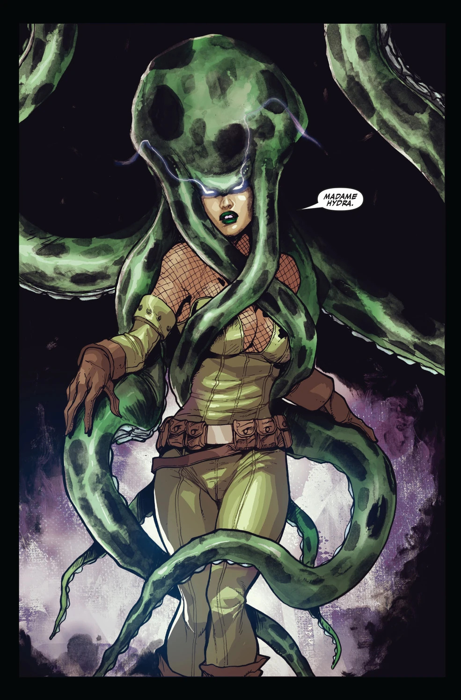
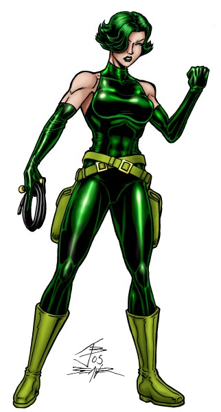
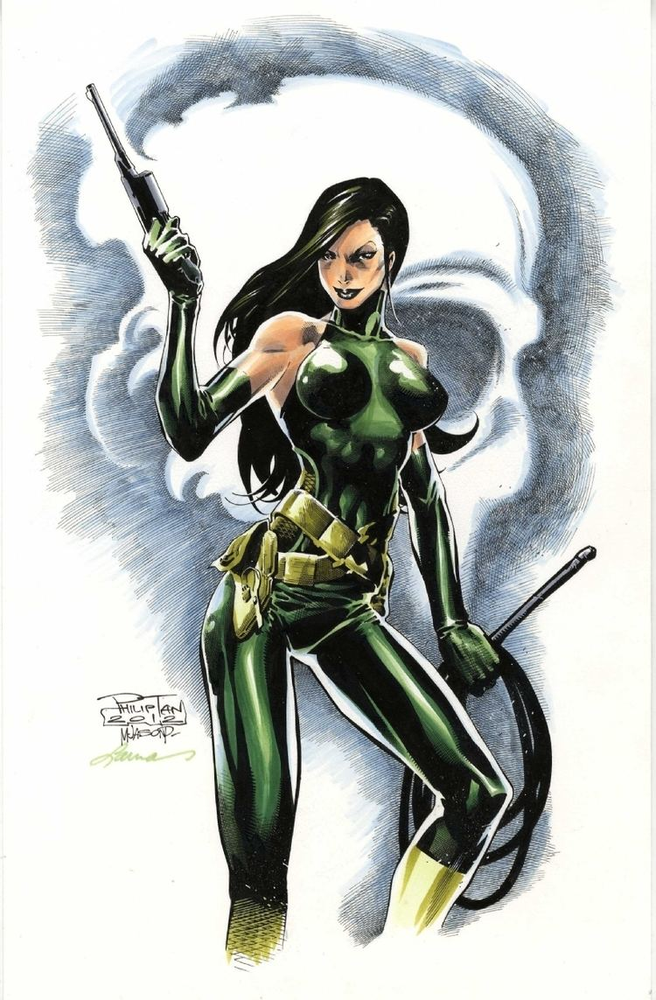
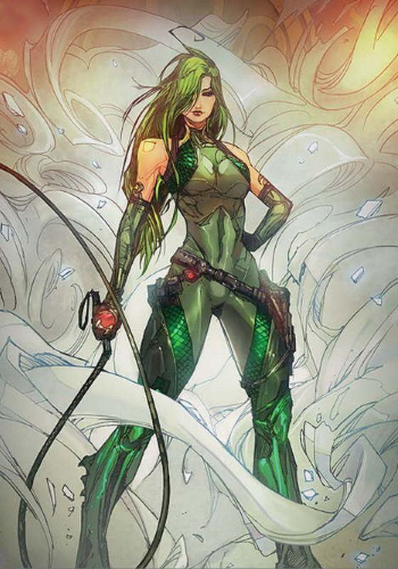
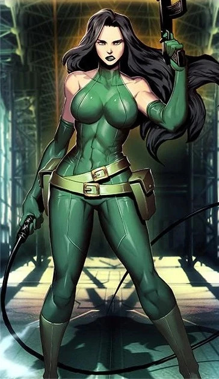